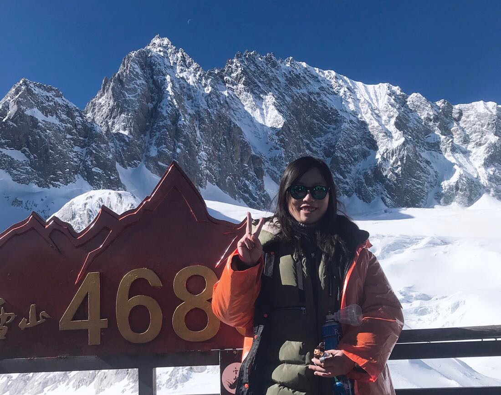

Experience as a voluntary teacher
In 2018 Winter, I went to ErYuan county in YunNan Province, serving as an voluntary primary school English teacher there. Because of its remote location, the English education there is still backward. I was very honored to share my English learning experience during my primary school with the local English teachers and give English lessons to the primary school students there. I also made friends with many primary school students, their pure smile deeply impressed me.
Journey in Yunnan
Besides, I also used this oppotunity to visit Yunnan, one of the most beautiful provinces in China.
At Erhai
Erhai is located in Dali bai autonomous prefecture in Yunan Province and it is the second largest highland lake in Yunnan. Looking down from the sky, Erhai is like a new moon, lying quietly between Cangshan and Dali Bazi. Because of its clear water and high transparency, it has been called "flawless jade among mountains" since ancient times. I was deeply impressed by the beautiful scenery there, feeling an unprecedented sense of peace and quietness.
At Jade Dragon Snow Mountain
Jade Dragon Snow Mountain is the snow mountain closest to the equator. Its 13 snow peaks are continuous, just like a "dragon" flying, so it is called "jade dragon". It's the holy mountain of Naxi people, which is said to be the incarnation of the protection god of Naxi people. During my journey, I succeeded in climbing to one of the top whose altitude is 4680 meter.
